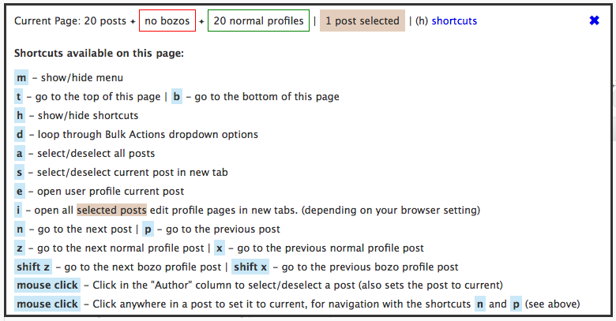
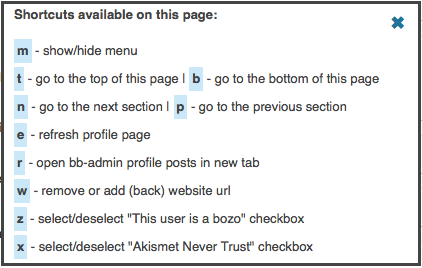
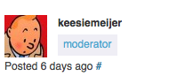

Note: This is not the latest version, check out the latest stable release.
WordPress Moderator Tools. Version 1.
Tools for WordPress dot org forum moderators.
Forum posts (you replied to) in order of activity
A tool to display the topics of your WordPress [dot] org Profile Pages in order of activity can be found here:
http://www.stoerke.be/recentforumactivity/
Why:
http://wordpress.org/support/topic/feature-request-wordpress-forums-recent-activity-when-logged-in
Keyboard navigation and more.
A Javascript tool that adds keyboard shortcuts (navigation) and a menu to the following pages
- wordpress.org/support/bb-admin/posts.php
- wordpress.org/support/bb-admin/topics.php
- wordpress.org/support/profile/profile-name
- wordpress.org/support/profile/profile-name/edit
- wordpress.org/support/topic/topic-title
The scripts append "view=all" to links to also see deleted and spam posts in topic threads (if you're logged in).
See Usage.
This tool can be installed in three ways, as a Javascript bookmarklet, a Firefox add-on, or a Greasemonkey user script (Firefox, Chrome). The add-on and user scripts run automatically on the specific pages and the bookmarklet has to be clicked from the browser bookmark menu.
See the Disclaimer on how you can use this in other browsers.
Older versions can be found at the Release Archive or Github.
Javascript bookmarklet
Drag this bookmarklet to your browser bookmark menu: Moderater Tools
Go to one of the listed pages and click the bookmarklet in your browser bookmark bar. Type "m" (menu) to see what shortcuts are available.
Firefox add-on
Install the Firefox add-on if you don't have Greasemonkey installed.
Click to install the Firefox Addon
Or download the Firefox Addon and add it manually.
You probably have to restart Firefox for the add-on to be activated
The add-on was created by this Greasemonkey script compiler.
Code used in the compiler: wp_moderator_shortcuts.js
Firefox Greasemonkey script
Install this user script if you have Greasemonkey installed.
Click to install: Firefox Greasemonkey user script
Chrome Greasemonkey script
(No need to install Greasemonkey)
- Click this Chrome Greasemonkey user script (Chrome will download the script, because it doesn't allow scripts to be added outside the Chrome Web Store)
- Go to "Window" > "Extensions"
- Drop the "wp_greasemonkey_Chrome.user.js" file in the "Extensions" page
- Click "Add"
Or download the script and drop the file in the Chrome "Extensions" page: WordPress_Moderator_Tools_Chrome_min.user.js
Usage
By typing "m" you open the menu where you can see information about the page and what shortcuts are available.
Menus
Menu wordpress.org/support/bb-admin/posts.php
A "Edit Profile" link is automatically added to all posts.

You can select a post by clicking in the author column. The author column gets a new background color when the post is selected (for visibility).

The menu for wordpress.org/support/bb-admin/posts.php

Clicking "shortcuts" or typing "h" displays all shortcuts available for that page.

The menus for wordpress.org/support/bb-admin/topics.php are exactly the same.
Menu wordpress.org/support/profile/profile-name/edit

Menu wordpress.org/support/profile/profile-name

Menu wordpress.org/support/topic/topic-title

Current posts are marked with a gray backgound color for the "User Type"

Go and play and test all the shortcuts for yourself.
Defaults
The Greasemonkey user scripts hides the menu by default and uses a brownish backgound color for selected posts. By editing the Greasemonkey file you can have it show the menu by default and change the selected color. Find var P="hide";var h="#e3cebd"; at the start of the minified javascript. Change "hide" to show var P="show"; and change the color in var h="#e3cebd"; to your liking and save the file.
Disclaimer
All the scripts are tested in Firefox and Chrome only. If other browsers support Greasemonkey user scripts you can try with one of the Greasemonkey users script js files found on this page. The Javascript bookmarklet can be used in all browsers.
Happy moderating